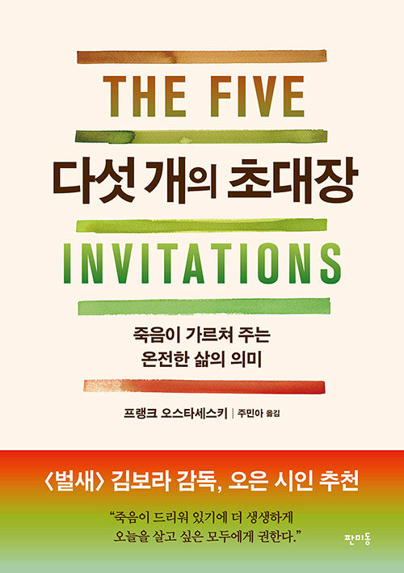
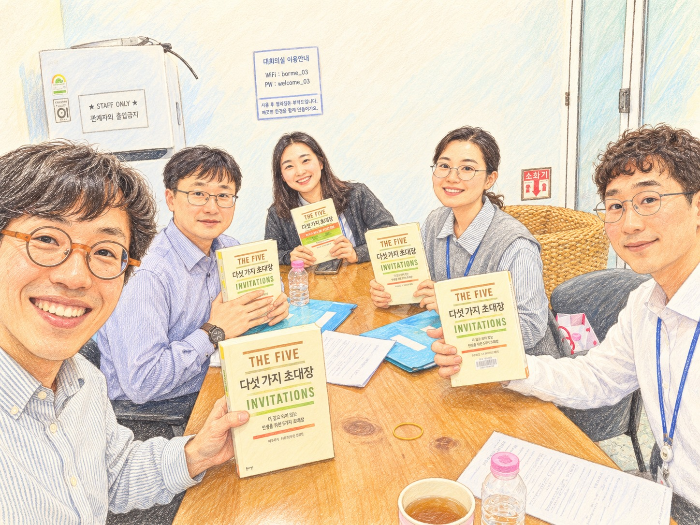

사과 없는 상처를 마주하며, 삶의 곁을 지키는 방법
오스타세스키의 책에서 출발한 대화는 용서와 가족의 오랜 상처를 지나, 리더의 취약성과 곁을 지키는 경청의 태도로 이어졌습니다.

THE BOOK WE SHARED · NO. 16그날의 대화, 세 줄로
- 01
죽음의 유한성과 '뜨거운 석탄' 비유를 통해, 사과받지 못한 상처를 먼저 용서하는 일의 의미와 어려움을 함께 고민했습니다.
- 02
모든 것을 아는 리더나 부모가 되려 하기보다, 모름과 취약성을 솔직히 인정할 때 진정한 관계와 자율성이 시작된다는 점을 나눴습니다.
- 03
해결책을 앞세우기보다 아픔의 저항을 줄이고 온전히 곁에 머무는 경청의 힘을 돌아보며, 다음 책으로 『일인칭 가난』을 골랐습니다.
그날의 스케치

함께 책을 펼치고 이야기를 나누었던 그날의 자리
함께 나눈 질문
대화의 주제를 읽기 편하도록 질문형으로 정리했습니다.
사과받지 못한 상처도 먼저 용서해야 할까?
참석자들은 책에 등장하는 ‘뜨거운 석탄’과 ‘200킬로그램을 1킬로그램씩 드는’ 비유를 각자의 경험에 비추어 나누었습니다. 상대를 벌주기 위해 쥔 분노가 결국 자신을 태운다는 점에는 공감하면서도, 사과받지 못한 큰 상처를 선뜻 내려놓기 어려운 솔직한 현실을 이야기했습니다. 용서는 강요될 수 없으며, 감정을 정리할 계기와 시간이 필요하다는 데 생각이 모였습니다.
약한 모습을 드러내는 것이 어떻게 힘이 될까?
회사나 친구 관계에서 유능하고 완벽해 보이려 애쓰는 태도가 오히려 진정한 소통을 가로막을 수 있다는 점을 짚었습니다. ‘취약성(vulnerability)’을 모르는 것을 솔직히 모른다고 인정하고 생각을 묻는 용기로 읽어냈습니다. 약점을 드러냈을 때 만만하게 보일 수 있다는 두려움을 감수하고 진심을 꺼내놓는 태도가 신뢰를 만든다는 점을 논의했습니다.
모든 것을 알아야만 좋은 리더나 부모일까?
관리자나 부모가 모든 답을 쥐고 통제하려 할 때 생기는 부담과 한계를 나눴습니다. 순환 보직이나 새로운 업무 환경에서 ‘나도 처음이니 같이 알아보자’고 털어놓는 리더십이 자율성을 북돋운다는 경험이 공유되었습니다. 육아에서도 아이를 지도하려 들기보다 아이의 자유로움에서 배우고 실수를 인정하는 태도가 관계의 출발점이 될 수 있음을 이야기했습니다.
해결책을 주는 것과 곁을 지키는 것은 어떻게 다를까?
‘아픔 더하기 저항은 고통’이라는 구절과 고통받는 이의 곁에 분석하거나 고치려 들지 말고 머물라는 조언을 살폈습니다. 가까운 이의 고민을 들을 때 돕고 싶은 마음에 판단과 해결책을 먼저 꺼냈다가 상대를 서운하게 했던 경험을 반성했습니다. 상대에게 필요한 지혜가 이미 있음을 믿고 온전히 귀 기울여 들어주는 존재 자체가 위로가 된다는 점을 확인했습니다.
오래된 관계에서도 새로운 사랑을 발견할 수 있을까?
처음의 설렘이 지나간 뒤 신뢰와 의리, 가족애로 변화해 가는 관계를 돌아보았습니다. 상대를 이미 다 안다고 확신하여 틀에 가두기보다, 여전히 모르는 면과 새로운 취향이 존재함을 인정하는 겸손이 필요하다는 데 공감했습니다. 오랜 시간 함께한 사이일수록 단정하지 않고 새롭게 알아가려는 노력이 관계를 지켜준다는 대화로 이어졌습니다.
질문의 기록 출처
- 사과받지 못한 상처도 먼저 용서해야 할까? — 1절
- 약한 모습을 드러내는 것이 어떻게 힘이 될까? — 2절
- 모든 것을 알아야만 좋은 리더나 부모일까? — 2절
- 해결책을 주는 것과 곁을 지키는 것은 어떻게 다를까? — 3절
- 오래된 관계에서도 새로운 사랑을 발견할 수 있을까? — 3절
그 밖의 재독 이야기는 2절, 책 밖의 이야기는 1·2절을 참고했습니다.
서로 달랐던 생각
다시 읽을까, 새로운 책을 만날까?
책의 내용이 다소 반복적이고 얕게 느껴졌으며, 서구권 독자의 불교적 환상이 섞여 있어 현실의 큰 상처 앞에서 와닿지 않는 부분이 있었다고 보았습니다.
내용에 완전히 동의하지 않더라도, 죽음을 앞둔 사람들의 관점을 통해 남겨진 삶에서 사랑과 관계의 가치를 돌아보게 한 점은 의미 있었다고 평가했습니다.
책의 깊이와 접근 방식에는 서로 다른 아쉬움과 울림이 있었지만, 결국 남는 것은 관계와 사랑이라는 질문 앞에서는 함께 고개를 끄덕였습니다.
책 밖으로 이어진 이야기
영화 「밀양」과 용서의 비대칭
가해자는 종교를 통해 먼저 평안을 얻었지만 피해자는 여전히 고통 속에 머무는 영화의 설정을 떠올리며, 용서가 결코 쉬운 교훈으로 치환될 수 없음을 나눴습니다.
AI에게 쉽게 설명해 달라고 했을 때
기사 이해를 돕기 위해 AI를 활용했으나, 기술에 지나치게 의존하다 보면 자신의 주관적 생각과 비판적 판단이 빠져나갈 수 있다는 우려를 공유했습니다.
관계의 단절과 곗돈의 기억
과거 타지 발령으로 모임에 참석하지 못했을 때 느꼈던 서운함과 이로 인해 연락이 뜸해졌던 경험을 나누며, 작은 오해와 거리가 관계에 미치는 영향을 돌아봤습니다.
모임 뒤에 남은 질문
그날의 대화에서 이어 생각해 볼 질문입니다.
- 내가 끝내 내려놓지 못하고 쥐고 있는 '뜨거운 석탄'은 무엇일까?
- 나의 취약하고 모르는 모습을 솔직하게 꺼내놓을 수 있는 자리는 어디일까?
- 가까운 사람이 아파할 때, 해결책 대신 온전히 곁에 머물러 줄 수 있을까?
- 오래된 관계에서 상대를 다 안다는 착각을 내려놓고 새롭게 발견할 것은 무엇일까?
전체 기록
대화의 자세한 흐름은 원본 모임후기에서 확인할 수 있습니다.
이 글은 모임 후기를 바탕으로 대화의 흐름을 정리한 요약입니다. 질문 제목은 편집 과정에서 재구성했으며, 참석자의 해석과 의견을 담고 있습니다.